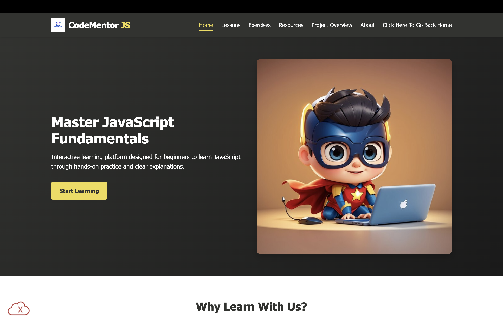

Peer Evaluation 1 - Panajkar, Neel
Reviewing Panajkar, Neel - Client Project
Screenshot of Neel's Site called CodeMentorJS click image or THIS LINK to go to site.
Evaluation Checklist Notes
- There are no uppercase letters or spaces in file or folder names.
- The page has sufficient contrast and font sizing so it is easy to read.
- The page uses site colors and fonts from the standard CSS file.
- Each page includes a header, main, and footer, and nav
- The header contains an brand/logo.
- The main section starts with an has an h2 element.
- No slogan but its purpose of the website is consistent through its pages.
- The footer has the correct links including validation and user pages .
- aligns with checklist.
CRAP Principles:
- Contrast: No contrast issues and everything is easy to read.
- Repetition: There is consistent styling and design on all pages.
- Alignment: The alignment is there through all the pages.
- Proximity: The sections are organized and grouped correctly.